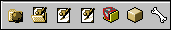
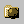
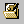
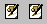
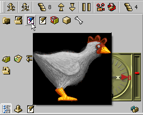
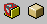
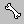

Userdata panel
Updated 01 Mar 2011
- QuArK Information Base
- 1. Introduction to QuArK
- 1.6. Model-editor in QuArK
|
|
Userdata panel
Updated 01 Mar 2011
|
Upper levels: - QuArK Information Base - 1. Introduction to QuArK - 1.6. Model-editor in QuArK |
|
1.6.7. Userdata panel |
[ - - ] |
 This panel can contain Objects that you use most frequently for easy access and application. Even though the panel might take an item it may not be all that practical. To place an Object into this panel simply drag and drop it at the location you desire. Items can be rearranged in the same manor of dragging them in front or behind other items. You can always remove objects from the panel, by dragging them to the trashcan in the Misc tools section. A brief description of the most common objects and how they might be used is given below. |
|
Index |
|
Components |
cdunde - 01 Mar 2011 | [ Top ] |
|
 Any component can be placed here including all of its sub-folders and their items. |
|
Skins folders |
cdunde - 01 Mar 2011 | [ Top ] |
|
 Any Skins folder can be placed here including all of its skin textures. |
|
Skin Textures |
Decker - 01 Mar 2011 | [ Top ] |
|
 You can even put in a single texture in the userdata panel. Dragged from either a component's Skins folder or the Texture Browser these will display the skin image when you rest your cursor over them.  |
|
Bounding Boxes |
cdunde - 01 Mar 2011 | [ Top ] |
|
 You can put in a Bounding Box sub-group folder with all of its bboxes in it or a single bounding box in the userdata panel. |
|
Bones |
cdunde - 01 Mar 2011 | [ Top ] |
|
 You can put in a bone with all of its sub-bones included. Which means you can rig an entire default Skeletons and use one of those to drop into the Skeleton folder of a new model ready for vertex assignments. |
|
Copyright (c) 2009, GNU General Public License by The QuArK (Quake Army Knife) Community - http://quark.sourceforge.net/ |
[ - Top - ] |